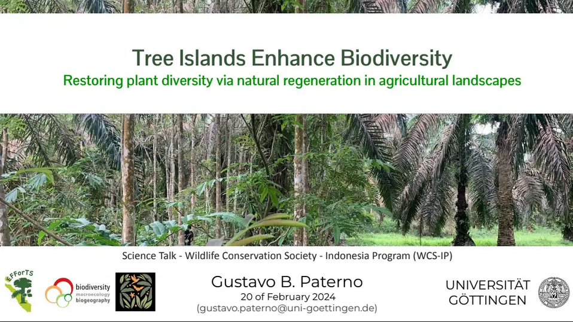

Tree Islands Enhance Biodiversity
Restoring plant diversity via natural regeneration in agricultural landscapes
By Gustavo Paterno in talks
February 20, 2025
Abstract
In this talk I gave an overview of how tree islands can be used to restore plant diversity in agro-cultural landscapes.
Date
February 20, 2025
Time
12:00 AM
Location
Online
Event

Assciated publications
Paterno, G.B.*****, Brambach, F., Guerrero-Ramírez, N., Zemp, D. C., Cantillo, A. F., Camarretta, N., Moura, C. C. M., Gailing, O., Ballauff, J., Polle, A., Schlund, M., Erasmi, S., Iddris, N. A., Khokthong, W., Sundawati, L., Irawan, B., Hölscher, D., & Kreft, H. (2024). Diverse and larger tree islands promote native tree diversity in oil palm landscapes. Science, 386(6723), 795–802. [doi]